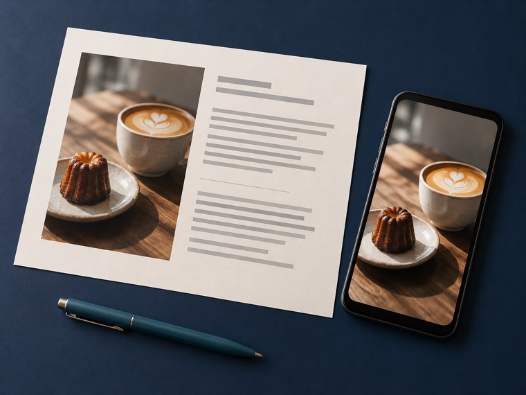

投稿文
- 完成物
- 本文＋確認事項
- 端末
- スマホ
- 作業
- 短く整える

使える機能や回数はプラン・時期で変わります。必要な場合は公式の料金画面で確認してください。
事実を増やさず、短く読みやすく整える。
ひだまりカフェの秋限定メニュー。商品名は焼きりんごトースト。10月限定。11時から提供。なくなり次第終了。価格、定休日、予約の要否は未確認。
次の確認済み情報だけを使い、SNS投稿文を80〜120字で2案作ってください。落ち着いた店の雰囲気にし、未確認の価格・定休日・予約条件は書かないでください。最後に確認が必要な項目を分けてください。確認済み情報：［依頼入力例を貼る］
秋の午後に、焼きりんごの香りを楽しみませんか。10月限定で、焼きりんごトーストをご用意します。11時から、なくなり次第終了です。
確認：正式な商品名、価格、定休日、予約の要否。
保存形式：UTF-8のテキスト、または指定のドキュメント。

背景と重要な文字を分け、1枚で伝える。
補足：はじめてでも安心
日時：11月9日 10時から
主役：鉢植えのバジル
指定：縦4:5、PNG。文字は後で載せる。
人物・文字・ロゴのない、ハーブ教室の告知用背景を作ってください。窓辺のバジル鉢、白い壁、自然な葉の影。右上に見出し、右下に日付と時間を置く余白。縦4:5、緑とテラコッタ色。重要な文字は入れないでください。
完成例：「ハーブの育て方教室」「はじめてでも安心」「11月9日」「10時から」を自分で載せます。
保存形式：完成PNGと、修正用の編集データ。
買う人の疑問を、順番に減らす。
依頼入力例：商品名は「窓辺で育てるバジル栽培セット」。鉢1個、培養土1袋、種1袋、育て方カード1枚。室内向け。日当たりのよい窓辺で育て、土の表面が乾いたら水を与える。鉢の実寸、種の量、返品条件は未確認。
確認済み情報だけを使い、①商品名、②80〜120字の説明、③内容、④使い方、⑤確認事項に分けてください。素材、効果、サイズ、返品条件を推測しないでください。確認済み情報：［依頼入力例を貼る］
鉢、土、種がまとまった、室内向けの栽培セットです。日当たりのよい窓辺で、土の表面が乾いたら水を与えます。
内容：鉢1個、培養土1袋、種1袋、育て方カード1枚。
確認：鉢の実寸、種の量、返品条件。
保存形式：依頼指定のドキュメント、またはCSV。
事実を「名前／内容／使い方／未確認」に分け、全文指示と一緒に送ります。
問い合わせと、確認済みの事実を分ける。
依頼入力例：問い合わせは「土曜日の教室へ参加したい。道具は必要か。キャンセル方法は」。確認済み案内は「道具は会場で用意。キャンセルは開催2日前までに申込メールへ返信。空席は予約表で要確認」。
問い合わせと確認済み案内を読み、①要点、②確認済みの事実だけで書く返信案、③確認事項に分けてください。空席や開催日を推測しないでください。問い合わせ：［原文］ 確認済み案内：［事実資料］
お問い合わせありがとうございます。道具は会場でご用意するため、お持ちでなくても参加できます。キャンセルは開催2日前までに、申込時のメールへご返信ください。参加枠を確認後、申込完了をご案内します。
未確認：空席、開催日、返信先メール。
保存形式：返信本文と内部の確認メモを分けたテキスト。
音声を、字幕と絵の順番へ分ける。
依頼入力例：15秒のカフェ紹介。音声ファイル1本。店内、朝食、フォカッチャの3画像。縦9:16。字幕は大きい1行。MP4で納品。
音声を実際に確認し、話の意味ごとに3つへ区切ってください。各区間へ1行字幕と、店内・朝食・フォカッチャの対応画像を割り当ててください。音声にない言葉を足さず、字幕時刻、画像名、確認事項を表にしてください。
区間1「カフェとは」→店内。区間2「ブレックファストとして」→朝食。区間3「フォカッチャを食べれる場所」→フォカッチャの寄り。字幕は音声と同じ内容。
保存形式：縦9:16のMP4と、字幕・画像対応表。
パソコンがあると進めやすい仕事です。05の動画編集キットでは、文字起こしからMP4出力まで実行できます。
気になる仕事を1つ選び、架空例を最後まで作ります。終わったら「楽だった」「迷った」「もう一度やりたい」を1行ずつメモしてください。